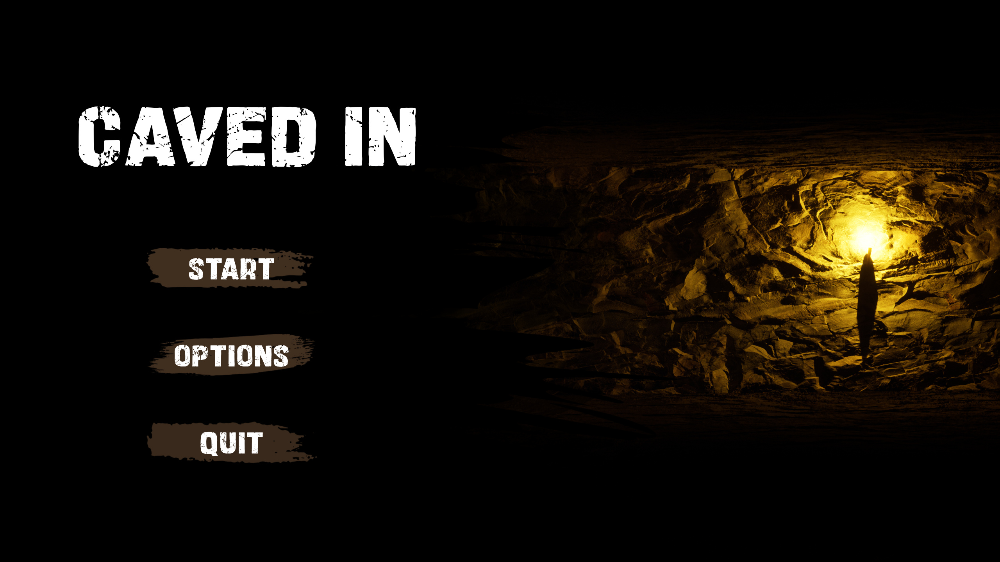

My Portfolio
Caved In
About the Project
Caved In is a co-op first-person survival extraction game. Set within a cave system, 4-8 players need to plant samples and transport them back to the exit to open the elevator door and escape. Players may get infected while exploring the mine, but will hide it from the other players. Infected players lay traps to infect more players!
It was created over a period of three months using Unreal Engine 5 in Game Design Studio 2, a third year capstone subject in the Bachelor of Game Development.
My Contribution
Along with three other students, I developed many of the main mechanics of the game. My main contributions were some of the UI design, all of the map design, and the procedurally generated cave systems.
What I Have Learned
Using the Agile development model, I learnt about project management in game development. Regular playtesting with other UTS students gave us helpful feedback which we then analysed and used to improve the game. Using Unreal Engine was a challenge, as none of the development team had much experience in it, but we learned a lot from this experience and I am certainly more confident in the engine. I learnt much about using C++ and Unreal Blueprints to create my code and used many features I had little experience in, such as Unreal's networked online multiplayer system.